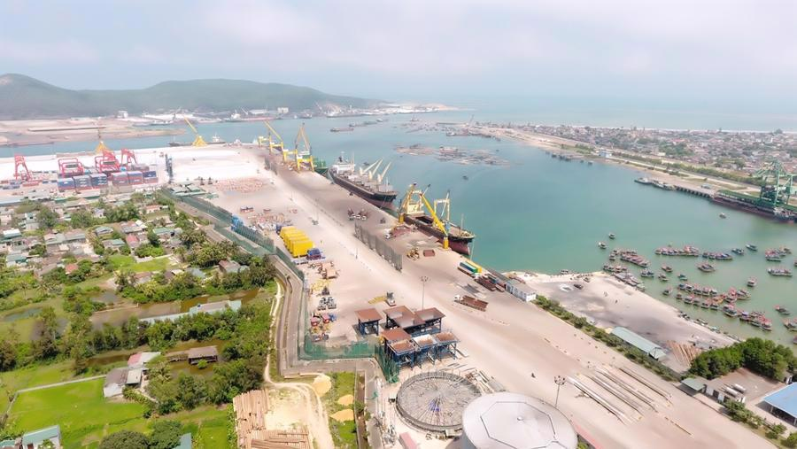

Kinh tế và hạ tầng
Việc duy trì vị trí thứ 8 về quy mô GRDP toàn quốc là chi tiết rõ nét phản ánh sức mạnh nội tại và tốc độ tái cơ cấu kinh tế ấn tượng của tỉnh Thanh Hóa trong thời gian qua. Đóng vai trò là một trong những cực tăng trưởng quan trọng nhất của khu vực Bắc Trung Bộ, tỉnh đã và đang tối ưu hóa các lợi thế so sánh để bứt phá. Trong cấu trúc phát triển đó, Khu kinh tế Nghi Sơn giữ vị trí trung tâm chỉ huy công nghiệp và dịch vụ hàng hải, hoạt động như một đòn bẩy chiến lược nhằm gia tăng năng lực cạnh tranh quốc gia. Bằng việc kiến tạo một hệ sinh thái hạ tầng kỹ thuật đồng bộ, hiện đại cùng khung thể chế ưu đãi vượt trội, Nghi Sơn đã tạo ra sức hút mạnh mẽ đối với dòng vốn đầu tư trong nước cũng như dòng vốn FDI chất lượng cao, trở thành động lực lan tỏa phát triển cho toàn bộ vùng phụ cận.
1. Cảng biển Nghi Sơn
Trở lại thời điểm trước những năm 1990, vùng đất duyên hải phía Nam tỉnh Thanh Hóa - nay thuộc địa giới hành chính xã Nghi Sơn, nơi đây vẫn mang diện mạo của một vùng biển nghèo, đời sống người dân chủ yếu phụ thuộc vào nghề cá truyền thống. Dù vậy, dưới góc nhìn kinh tế hàng hải, Nghi Sơn sở hữu giá trị tự nhiên vô cùng đắt giá: sự hiện diện của đảo Hòn Biện đóng vai trò như bức tường thành thiên nhiên chắn gió, hình thành nên vùng vịnh lặng sóng. Nhận diện rõ tiềm năng khác biệt đó, các chính sách quy hoạch đã chính thức gọi tên Nghi Sơn, mở ra bước ngoặt lịch sử trong việc đặt nền móng xây dựng cảng biển.

- Giai đoạn đặt nền móng (1997): Cảng Nghi Sơn chính thức được khai sinh theo quyết định quy hoạch của Thủ tướng Chính phủ, với sứ mệnh ban đầu mang tính hạt nhân là cảng chuyên dụng phục vụ trực tiếp cho hoạt động sản xuất và vận hành của Nhà máy Xi măng Nghi Sơn.
- Giai đoạn mở rộng và tái định vị chiến lược (2000 - 2006): Sau khi đưa vào khai thác các bến số 1 và bến số 2, việc thành lập Khu kinh tế Nghi Sơn vào năm 2006 đã tạo nên bước ngoặt mang tính lịch sử. Cảng Nghi Sơn chính thức vươn mình từ một cảng phục vụ công nghiệp đơn lẻ trở thành hệ thống cảng biển tổng hợp đa ngành, đáp ứng nhu cầu giao thương quốc tế gia tăng.
- Giai đoạn bứt phá và hiện đại hóa toàn diện (2013 - nay): Việc triển khai Siêu dự án Khu liên hợp Lọc hóa dầu Nghi Sơn đã trở thành đòn bẩy then chốt đưa cảng bứt phá vượt bậc. Hạ tầng cảng được nâng cấp chuyên sâu với việc bổ sung các bến hàng lỏng chuyên dụng và hệ thống phao nổi xuất nhập dầu thô không bến (SPM) hiện đại ngoài khơi, khẳng định vị thế cửa ngõ hàng hải hàng đầu khu vực Bắc Trung Bộ.
- Quy mô mặt đất và vùng nước cảng biển: Quy hoạch chi tiết tổng thể vùng đất và vùng nước Cảng Nghi Sơn trải rộng trên diện tích hàng nghìn héc-ta. Trong đó, hệ thống luồng hàng hải và vũng quay tàu được thiết kế đạt tiêu chuẩn kỹ thuật hiện đại với độ rộng và độ sâu lý tưởng, đảm bảo tối đa an toàn hàng hải cho các tàu trọng tải lớn lưu thông thuận lợi.
- Hạ tầng cầu bến và định hướng nâng cấp: Theo quy hoạch phát triển dài hạn, hệ thống cảng Nghi Sơn hướng tới quy mô 62 bến cảng bao gồm phân khu cảng tổng hợp, cảng container và các cảng chuyên dùng. Với tổng chiều dài cầu bến hiện hữu đã vượt mốc 5,3 km, cảng đang tiến hành nâng cấp toàn diện các tiêu chí hạ tầng để sớm được công nhận là Cảng biển đặc biệt (Loại IA) của quốc gia.
- Hệ thống tiếp nhận dầu thô ngoài khơi (Phao nổi SPM): Điểm nhấn kỹ thuật hàng hải đỉnh cao của Nghi Sơn là hệ thống phao neo đơn (Single Point Mooring - SPM) đặt cách bờ 35 km. Hạ tầng hiện đại này cho phép cảng tiếp nhận an toàn các siêu tàu chở dầu thô (VLCC) có trọng tải cực lớn lên đến 320.000 DWT, trực tiếp phục vụ cho Khu liên hợp Lọc hóa dầu Nghi Sơn.
- Năng lực thông qua và kết nối hàng hải quốc tế: Với sản lượng hàng hóa xử lý thực tế đạt hơn 56 triệu tấn/năm, Nghi Sơn không chỉ khẳng định vị thế cửa ngõ logistics then chốt của vùng Bắc Trung Bộ mà còn thu hút thành công các hãng tàu container lớn trên thế giới (như CMA-CGM), mở rộng mạng lưới kết nối thẳng tới các thị trường quốc tế.
- Cửa ngõ logistics vùng Bắc Trung Bộ: Là đầu mối giao thương hàng hóa biển ngắn nhất và thuận tiện nhất cho khu vực Bắc Miền Trung, Tây Nguyên và các tỉnh mũi nhọn kinh tế lân cận.
- Cửa ngõ hành lang kinh tế Đông - Tây: Kết nối luân chuyển hàng hóa cho vùng quốc tế, đóng vai trò cửa ngõ ra biển cho khu vực Nam Lào và Đông Bắc Thái Lan.
- Đòn bẩy thu hút FDI: Với sản lượng hàng hóa xử lý thực tế đạt hơn 56 triệu tấn/năm, Nghi Sơn không chỉ khẳng định vị thế cửa ngõ logistics then chốt của vùng Bắc Trung Bộ mà còn thu hút thành công các hãng tàu container lớn trên thế giới (như CMA-CGM), mở rộng mạng lưới kết nối thẳng tới các thị trường quốc tế.

2. LIÊN HỢP LỌC HÓA DẦU NGHI SƠN (NSRP)
Sự chuyển mình mạnh mẽ và đà tăng trưởng kinh tế bền vững của tỉnh Thanh Hóa không chỉ dựa vào những ưu thế vượt trội từ hạ tầng logistics và giao thương hàng hải của hệ thống cảng biển, mà còn ghi nhận đóng góp hạt nhân đặc biệt quan trọng từ Khu liên hợp Lọc hóa dầu Nghi Sơn – một trong những dự án trọng điểm quốc gia, đóng vai trò đòn bẩy chiến lược cho sự phát triển công nghiệp của toàn vùng.